Know the Risks
Learn about common online risks and how to recognize warning signs.
Online Grooming
Someone may build trust with a young person and eventually pressure them to share private information or images.
Click to learn more →Cyberbullying
Harmful messages, threats, harassment, humiliation, or repeated online abuse.
Click to learn more →Privacy & Oversharing
Sharing too much personal information can make it easier for strangers to identify or contact you.
Click to learn more →Scams & Phishing
Be careful with suspicious links, fake giveaways, password requests, and urgent messages.
Click to learn more →Unsafe Content
Young people may encounter harmful, violent, sexual, or inappropriate content online.
Click to learn more →Unsafe Meetings
Be cautious when someone online pressures you to meet privately or keep the meeting secret.
Click to learn more →Online Grooming
Learn how grooming works, where it can happen, and what warning signs to watch for.
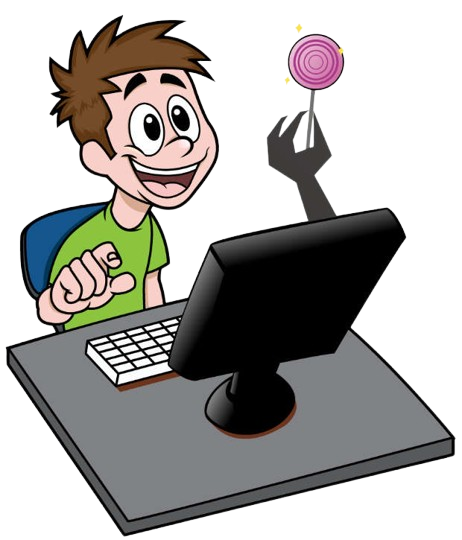
What is online grooming?
Online grooming happens when someone deliberately builds a child or young person's trust online. They may use friendly messages, compliments, gifts, or pretend to share the same interests. After gaining trust, they can slowly push the person toward sharing private information, pictures, or doing things they are not comfortable with.
Groomers may also use blackmail. They can threaten to expose private conversations or images unless the victim follows their demands. Because online communication can be private and happen quickly, grooming and blackmail can become especially difficult to recognize.
Where can it happen?
Grooming can happen on almost any platform that young people use, including social media, online games, chat rooms, live-streaming services, messaging apps, and video-chat tools. A person may also learn about a target by looking at public posts, profiles, photos, and other information shared online before starting a conversation.
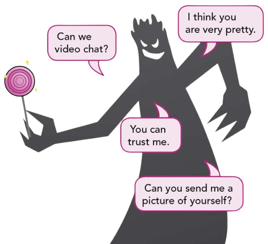
How does it happen?
A groomer may start with an ordinary conversation and gradually try to make the relationship feel private or special. They might pretend to be a young person, create more than one account, send random friend requests, or move the conversation from a public space into private messages. Over time, they may ask for photos, personal details, video calls, or secrecy.
Remember: You do not need to panic or stop using the internet. The important thing is to know that risks can exist on any platform and to recognize when someone's behavior crosses a boundary.
Privacy & Oversharing
Understand why protecting personal information matters and how to share safely online.
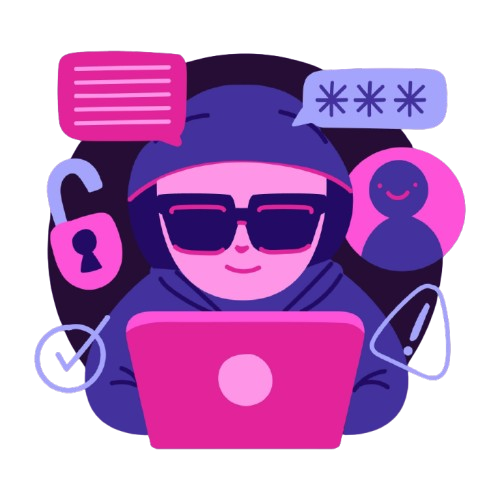
What are privacy and oversharing?
Privacy is the practice of protecting your personal information and controlling who can access or use it. Personal information can include your full name, home address, phone number, email address, passwords, school or workplace, photographs, location, financial information, and other details about your personal life. Protecting this information helps reduce the risk of identity theft, scams, hacking, harassment, and other online threats.
Oversharing happens when you share more personal information online than is necessary or safe. This can happen through social media posts, comments, photos, videos, online profiles, or even private conversations. Information that may seem harmless, such as your birthday, daily routine, vacation plans, or current location, can sometimes be combined with other details and used by people with harmful intentions.
Think before you share
It is important to think before you post, send, or share. Ask yourself whether the information is necessary to share, who can see it, and what could happen if it becomes public.
Avoid sharing passwords, financial information, exact addresses, private documents, or other sensitive information online.
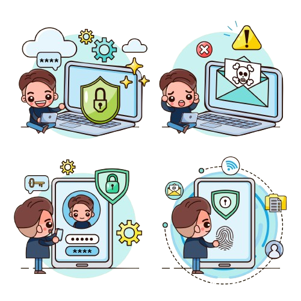
Remember
Not everything needs to be shared. Even when your social media account is private, screenshots and forwarded messages can allow your information to reach a much wider audience. Being careful about what you share is an important part of staying safe and protecting yourself online.
Scams & Phishing
Learn how scams and phishing work, recognize common warning signs, and protect yourself from suspicious messages and links.
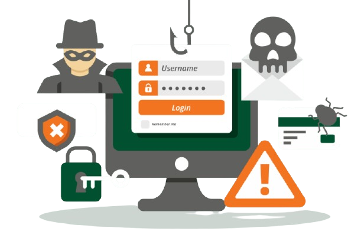
What are scams and phishing?
Scams and phishing are tricks used by criminals to deceive people into giving away money, personal information, passwords, account details, or access to their devices. They can happen through social media, emails, text messages, gaming platforms, websites, and messaging apps.
Phishing is a type of scam where someone pretends to be a trusted person or organization, such as a bank, school, delivery company, social media platform, or government agency. They may send a message asking you to click a link, download something, or provide private information.
Scammers often try to make people feel worried, excited, curious, or rushed so they will act without checking if the message is real.
Common signs of scams and phishing
- Suspicious messages or links that ask you to log in, provide personal information, or click something urgently.
- Fake prizes, jobs, offers, or giveaways that ask for money or personal details before you can receive them.
- Someone pretending to be a trusted person or organization and asking for passwords, verification codes, money, or other private information.
- Strange websites, account names, email addresses, or messages with unusual spelling and grammar.
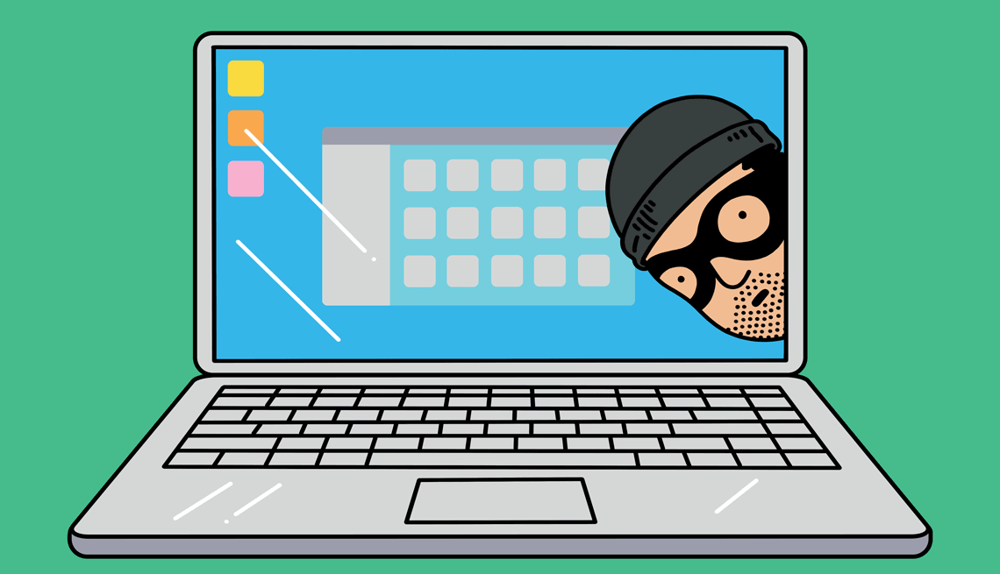
How can you protect yourself?
- Stop and check before clicking links, downloading files, or replying to unexpected messages.
- Never share your passwords or verification codes, even if someone claims to be from a trusted organization.
- Use official websites or apps to check whether a message or offer is genuine instead of using the link provided.
- Ask a trusted adult, teacher, parent, or another trusted person if you are unsure about something.
- Report and block suspicious accounts or messages and save evidence such as screenshots if you think you have been targeted.
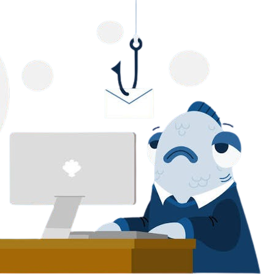
Remember
If a message makes you feel rushed, scared, or too excited, stop and think before you act. When something seems too good to be true or asks for private information, it is safer to check first.
Unsafe Content
Learn how to recognize harmful or inappropriate content online and what to do when something makes you feel uncomfortable or unsafe.
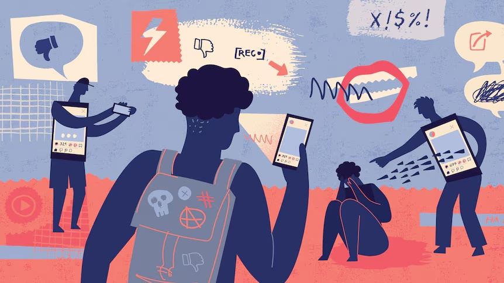
What is unsafe content?
Unsafe content is online material that can be harmful, disturbing, inappropriate, or dangerous, especially for children and young people. It can appear on social media, websites, video platforms, messaging apps, online games, or through links and messages shared by other people.
Unsafe content can include things that encourage harmful behavior, show violence, contain inappropriate sexual material, promote dangerous challenges, or spread hateful and harmful ideas. Sometimes, this content appears unexpectedly even when someone was not searching for it.
What can unsafe content include?
- Violent or disturbing material, such as graphic images, videos, or content showing people being harmed.
- Sexual or inappropriate content that is not suitable for children and young people.
- Hateful or harmful content that encourages discrimination, bullying, harassment, or violence against others.
- Dangerous challenges or activities that encourage people to hurt themselves or others.
- False or misleading information that can cause fear, confusion, or encourage unsafe decisions.
How can you stay safe?
- Do not interact with or share unsafe content if it makes you uncomfortable or seems harmful.
- Leave the page, video, chat, or game and use the platform's report and block features when appropriate.
- Use privacy and content controls to reduce the chance of seeing inappropriate material.
- Talk to a trusted adult if you see something disturbing, threatening, or difficult to understand.
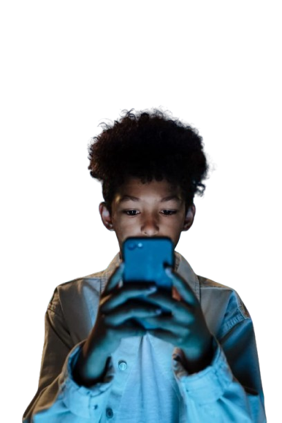
Remember
You are not responsible for content that appears unexpectedly. If something online makes you feel uncomfortable, scared, confused, or unsafe, you can leave it, report it, and ask someone you trust for help.
Unsafe Meetings
Learn how to recognize risky online meeting situations and stay safe when someone you met online wants to meet in person.
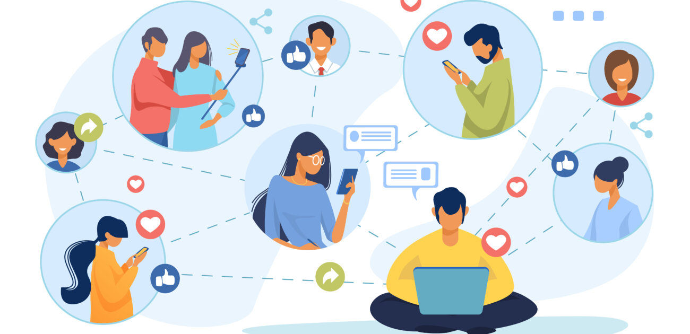
What are unsafe meetings?
Unsafe meetings happen when someone meets a person they first met online without taking proper safety precautions. People online may not always be who they claim to be, and someone can hide their real identity, age, or intentions.
Meeting an online contact in person can be risky, especially when the person pressures you to keep the meeting secret or asks you to meet somewhere private. Even if you have talked to someone for a long time, you may still not know who they really are.
What are some warning signs?
- Someone you met online asks to meet privately, especially in an isolated place or without telling a trusted adult.
- They ask you to keep the meeting a secret from your parents, guardians, teachers, or friends.
- They pressure or threaten you when you say you do not want to meet.
- Their stories or identity seem inconsistent, such as changing their age, name, or personal details.
- They offer gifts, money, transportation, or other rewards to convince you to meet them.
How can you stay safe?
- Do not meet someone you only know online by yourself.
- Tell a trusted adult before considering any meeting with an online contact.
- If a meeting is necessary, choose a busy public place and have a trusted adult accompany you.
- Never get into a stranger's vehicle or go somewhere private because they ask you to.
- If you feel uncomfortable or pressured, leave and get help immediately.
Remember
You never have to meet someone just because you have been talking to them online. If someone truly respects you, they will respect your boundaries and will not pressure you to meet secretly.
Cyberbullying
Understand what cyberbullying looks like, where it happens, and how to respond safely.
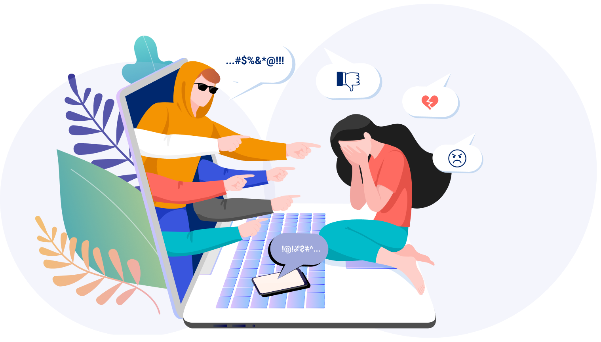
What is cyberbullying?
Cyberbullying is bullying that happens through digital technology. It can occur on social media, messaging apps, gaming platforms, websites, and mobile phones. The goal may be to frighten, embarrass, shame, anger, or isolate another person.
It can include spreading false stories or embarrassing photos and videos, sending cruel or threatening messages, or repeatedly targeting someone through online posts and chats.
What can it look like?
Someone might pretend to be another person and use a fake account to send hurtful messages. They may also share private content without permission, encourage others to join in, or use sexual harassment and bullying through digital tools, including AI-generated content.
Cyberbullying can happen at the same time as bullying in person. Because online actions can leave a digital footprint, screenshots, messages, posts, and other records may provide important evidence of what happened.
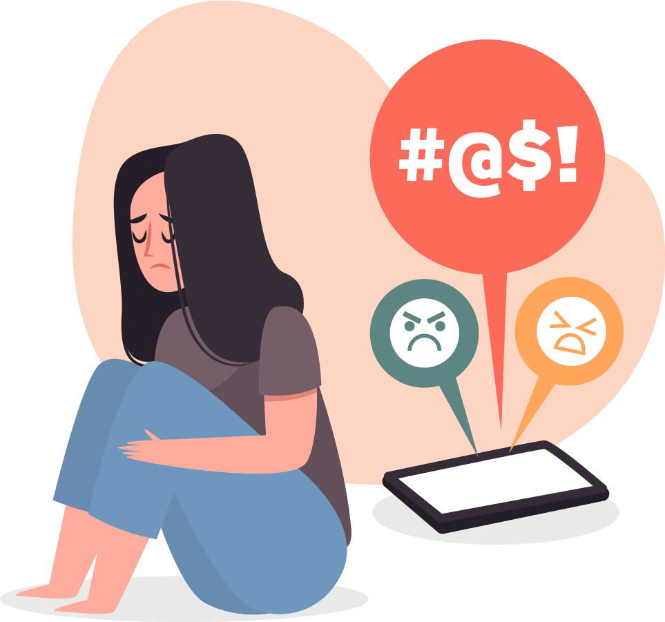
Where can it happen?
Cyberbullying can happen almost anywhere people communicate or spend time online, including social media, group chats, direct messages, online games, livestreams, forums, and mobile devices. It can move quickly between different platforms, so saving evidence can be helpful.